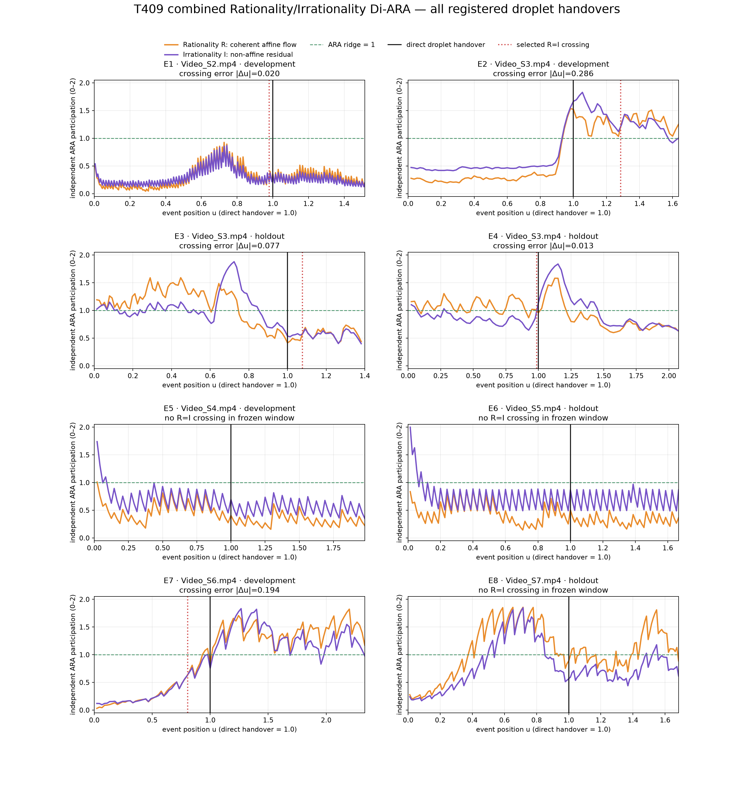
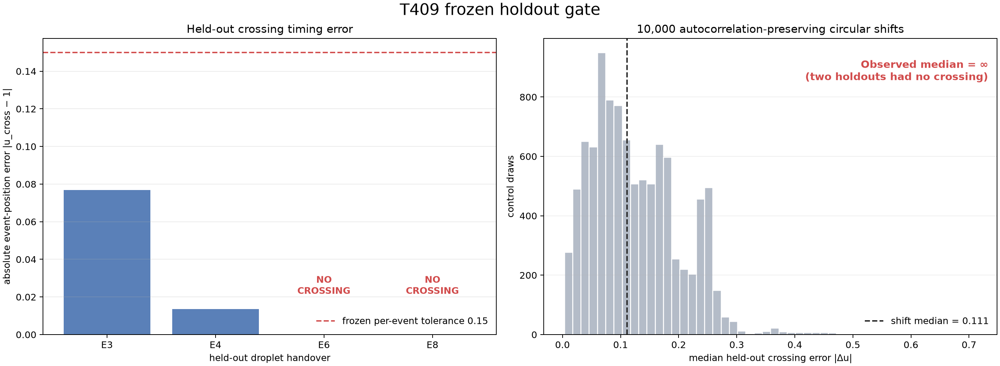
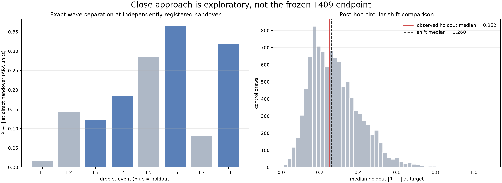
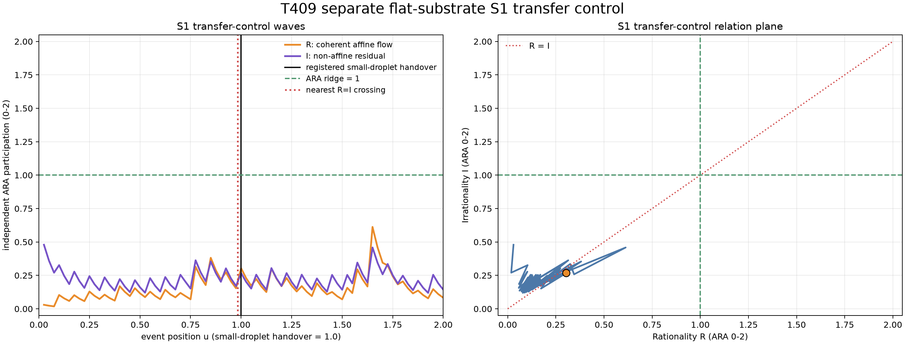
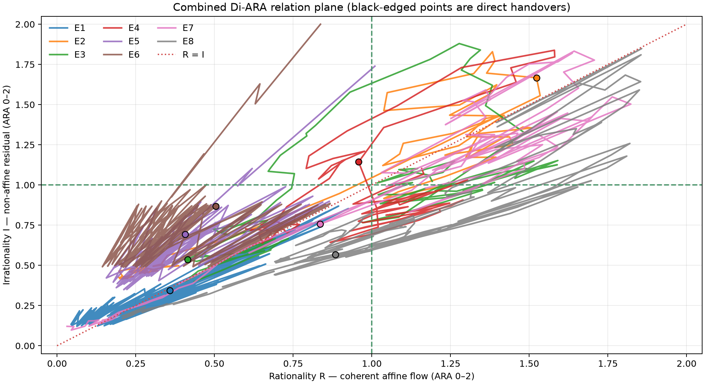

Combined Rationality/Irrationality Di-ARA at droplet handover
The two measured movement components form structured, identity-specific paths, but equality is not a universal handover rule. Two of four held-out fibre events crossed near handover; two never crossed. A separate flat-substrate small-droplet transfer did cross within 0.017 event units, showing a strong local rule rather than a universal one.
Who / What / When / Where / Why / How
Eight water-droplet lobe handovers on pre-wetted fibres; one separate small-droplet flat-substrate transfer.
R: coherent affine flow. I: non-affine residual flow.
Encoded frames before persistent lobe loss, through direct handover and reclosure.
Local droplet-pair ROIs; not a molecular bridge cut or whole-apparatus average.
Test equality/ridge landmarks in a combined Rationality/Irrationality Di-ARA.
Dense flow → RANSAC affine fit → independent 0–2 scaling → frozen holdout controls.
Frozen result
Protocol SHA-256: A3899462E5DFF426A0CA10A5418A7AAB4194093301BE3C66162C9B06B77E7A65.
| Holdout | Nearest R=I crossing | |u−1| | Result |
|---|---|---|---|
| E3 | 1.0769 | 0.0769 | pass |
| E4 | 0.9865 | 0.0135 | pass |
| E6 | absent | undefined | fail |
| E8 | absent | undefined | fail |


Post-hoc close approach

Separate S1 transfer control
A small central droplet disappears into the larger left droplet at registered encoded frame 40. Applying the frozen fibre scaling without refitting gives R=0.3041, I=0.2676, and a nearest equality crossing at u=0.9827. This is strong local correspondence, but one different identity/substrate cannot rescue the fibre gate.

What the geometry actually says
The decisive observation is that R and I mostly travel together: within-event Spearman correlations are 0.555–0.966. Their relation-plane paths largely follow a diagonal.

Interpretation: coherent and non-affine movement are two distinct participations in a shared movement budget. This cut does not yet establish a phase/anti-phase pair. It therefore allows equality but gives no reason that every identity must hand over at equality.
Claim status
Supported
- Stable two-component movement extraction.
- Structured identity-specific relation paths.
- Equality can mark some local handovers.
- Different handovers retain different dominant modes.
Not supported
- Universal R=I handover.
- Universal close approach at handover.
- Calling the two non-negative magnitudes the complete opposing pair.
Unresolved
- Whether a balance/direction coordinate supplies the missing anti-phase.
- Whether handover landmarks are class-conditional.
- Which physical identity controls the dominant mode.
Next ARA-faithful cut
Freeze a new test that separates common movement amount from relational balance:
B(t) = [R(t)−I(t)]/[R(t)+I(t)+ε]
xB(t) = 1+B(t) ∈ [0,2]
A records the shared movement budget; xB records which mode leads without defining either original wave as 2−other. Signed convergence/expansion and rotation can then supply physical direction. This is a proposed new test, not a retroactive T409 result.
Source and reproducibility
- Primary AIP study
- Figshare Video S1 entry (supplementary media are CC BY-NC 4.0)
- Frozen protocol
- Full findings in Markdown
- Source video hashes
- Frozen machine-readable result
- Post-hoc machine-readable result
- S1 control result
The source reports 20,000-fps acquisition; the published MP4s are slowed and encoded at 29.970 fps. All inference uses encoded frames and dimensionless event position rather than unverified microseconds.